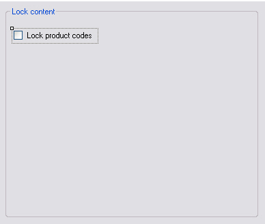

Implementing the Settings UI
Expose file type plug-in configuration settings through a user interface.
Add an Option to Lock Product Codes
Start by adding a user control element to your WinUI project, for example SettingsUI.cs. Add a group box and a check box named cb_LockPrdCodes to the control:

Set the Checked property to True, since product codes should be locked by default.
Your SettingsUI class needs the following namespace:
Sdl.FileTypeSupport.Framework.Core.Settings
The Settings Bundle
Each plug-in uses a settings bundle to store and retrieve settings. A separate class called UserSettings handles this mechanism (see Loading and Saving the Settings). Create an object based on the UserSettings class:
private UserSettings _userSettings;
To obtain the correct user settings for this settings page from the Filter Framework, implement IFileTypeSettingsAware:
public partial class SettingsUI : UserControl, IFileTypeSettingsAware<UserSettings>
Initialize the Plug-in User Interface Settings
When the user opens the plug-in user interface, set the control element according to what is stored in the settings bundle. Do this by setting the _userSettings object and implementing the Settings property from IFileTypeSettingsAware:
public UserSettings Settings
{
get
{
return _userSettings;
}
set
{
_userSettings = value;
UpdateControl();
}
}
During initialization, the UpdateControl method is invoked. It sets the check box state (checked or unchecked) to the value of the LockPrdCodes member in the UserSettings class:
public void UpdateControl()
{
cb_LockPrdCodes.Checked = _userSettings.LockPrdCodes;
}
Save the Settings to the Settings Bundle
When the user opens the plug-in UI, changes the check box setting, and clicks OK, save the setting to the settings bundle:
private void cb_LockPrdCodes_CheckedChanged(object sender, EventArgs e)
{
_userSettings.LockPrdCodes = cb_LockPrdCodes.Checked;
}
Putting It All Together
The full code of your user control:
using System;
using System.Collections.Generic;
using System.ComponentModel;
using System.Drawing;
using System.Data;
using System.Linq;
using System.Text;
using System.Windows.Forms;
using Sdl.FileTypeSupport.Framework.Core.Settings;
namespace Sdk.FileTypeSupport.Samples.SimpleText.WinUI
{
/// <summary>
/// Implements the user interface for the file type definition.
/// </summary>
public partial class SettingsUI : UserControl, IFileTypeSettingsAware<UserSettings>
{
/// <summary>
/// Create a settings object based on the UserSettings class.
/// </summary>
private UserSettings _userSettings;
/// <summary>
/// Initialize the user interface control by setting it to the
/// setting value stored in the settings bundle.
/// </summary>
public SettingsUI()
{
InitializeComponent();
}
/// <summary>
/// Reset the user interface control to its default value: checked,
/// which enables the product lock option by default.
/// </summary>
public void UpdateControl()
{
cb_LockPrdCodes.Checked = _userSettings.LockPrdCodes;
}
/// <summary>
/// Save the settings based on the check box value.
/// The setting is saved through the UserSettings class, which
/// handles the plug-in settings bundle.
/// </summary>
/// <param name="sender"></param>
/// <param name="e"></param>
private void cb_LockPrdCodes_CheckedChanged(object sender, EventArgs e)
{
_userSettings.LockPrdCodes = cb_LockPrdCodes.Checked;
}
/// <summary>
/// Implementation of IFileTypeSettingsAware allowing the Filter Framework
/// to pass through the user settings so that we can initialize the UI.
/// </summary>
public UserSettings Settings
{
get
{
return _userSettings;
}
set
{
_userSettings = value;
UpdateControl();
}
}
}
}
See Also
Note
This content may be out-of-date. To check the latest information on this topic, inspect the libraries using the Visual Studio Object Browser.